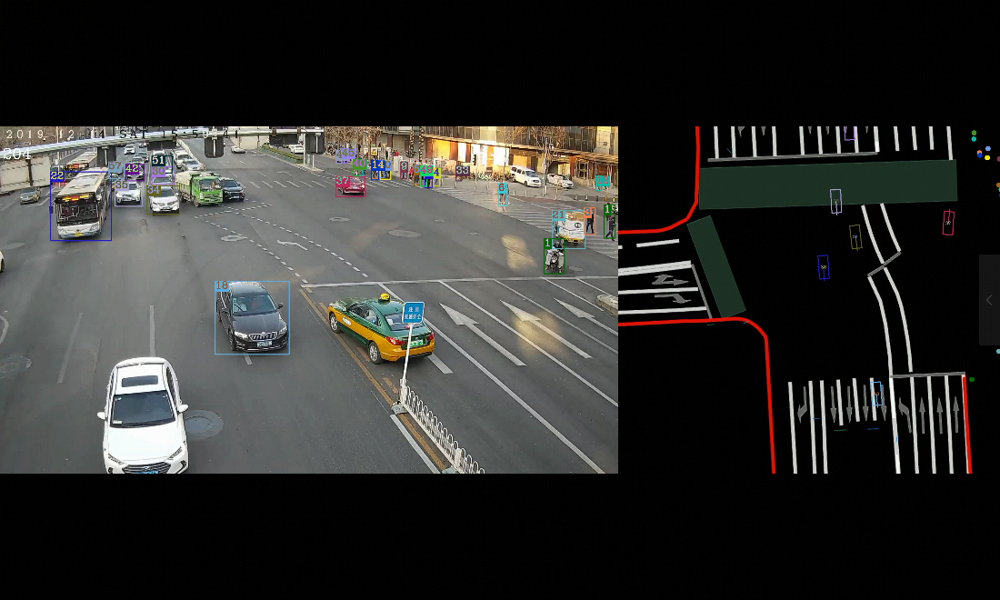
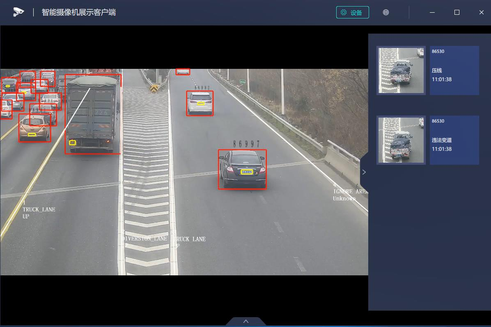
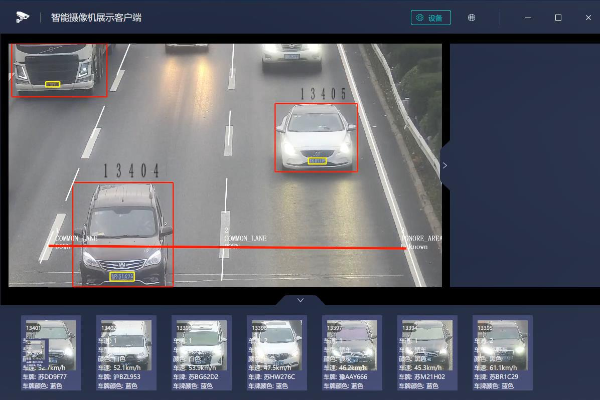
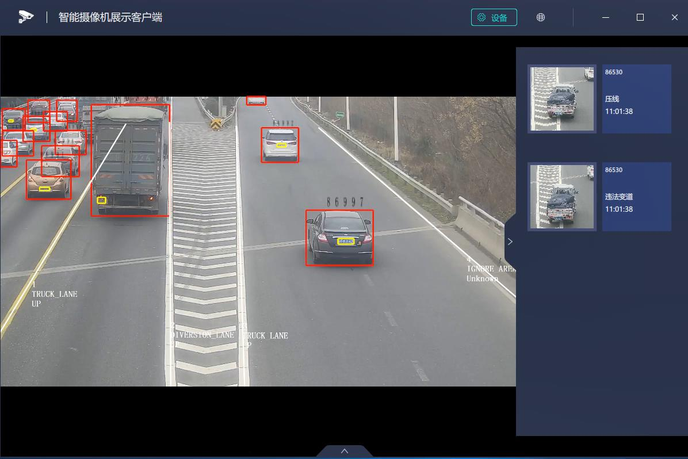
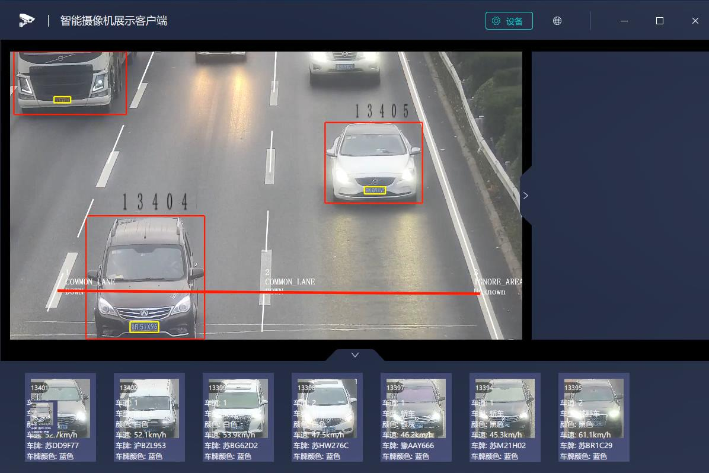

车路协同方案¶
介绍¶
车辆结构化参考方案是地平线在车路协同领域的交付沉淀，它支持功能如下：
机动车相关检测：包括车辆，车牌，车前窗三种框检测，以及车体颜色，车牌颜色，车牌类型，车牌号的属性识别。
非机动车的检测和行人检测
机动车，非机动车，行人的跟踪以及框级别的融合。
效果截图：

 



能力集¶
输入¶
图片数据
相关Method¶
基础method：FasterRCNNMethod、MOTMethod、CNNMethod、VoteMethod
特有method：
FilterSkipFrameMethod 跳帧，降低终端设备的计算压力
PlateVoteMethod 车牌投票，在某些图片中车牌不清晰时，根据策略在有限帧数内选择最清晰的车牌作为最终结果
vehicle_plate_match 车辆车牌匹配，根据vehicle_snap_method的识别结果，把识别到的车辆、车牌信息，一一匹配
编译¶
bash build.sh
运行¶
将部署包拷贝到板子上，即可运行。
export LD_LIBRARY_PATH=./lib
./vehicle_solution/vehicle_solution ./configs/vio_config.json.96board ./vehicle_solution/configs/smart_config.json ./vehicle_solution/configs/hbipc_config.json -i